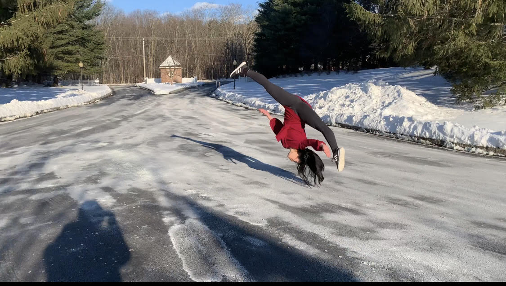
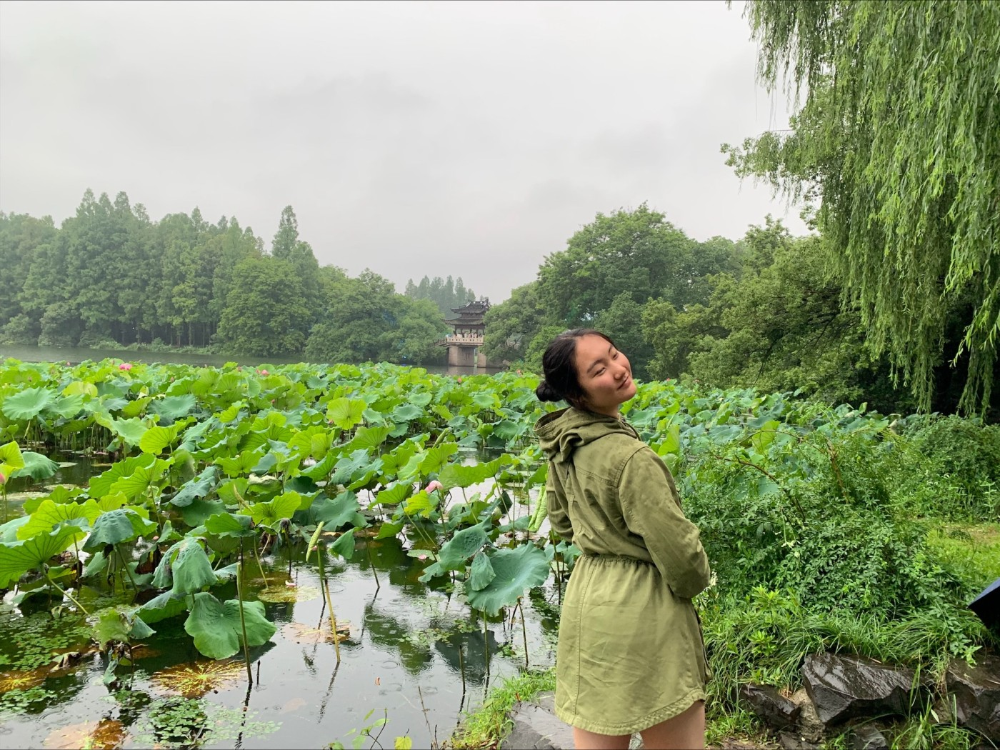
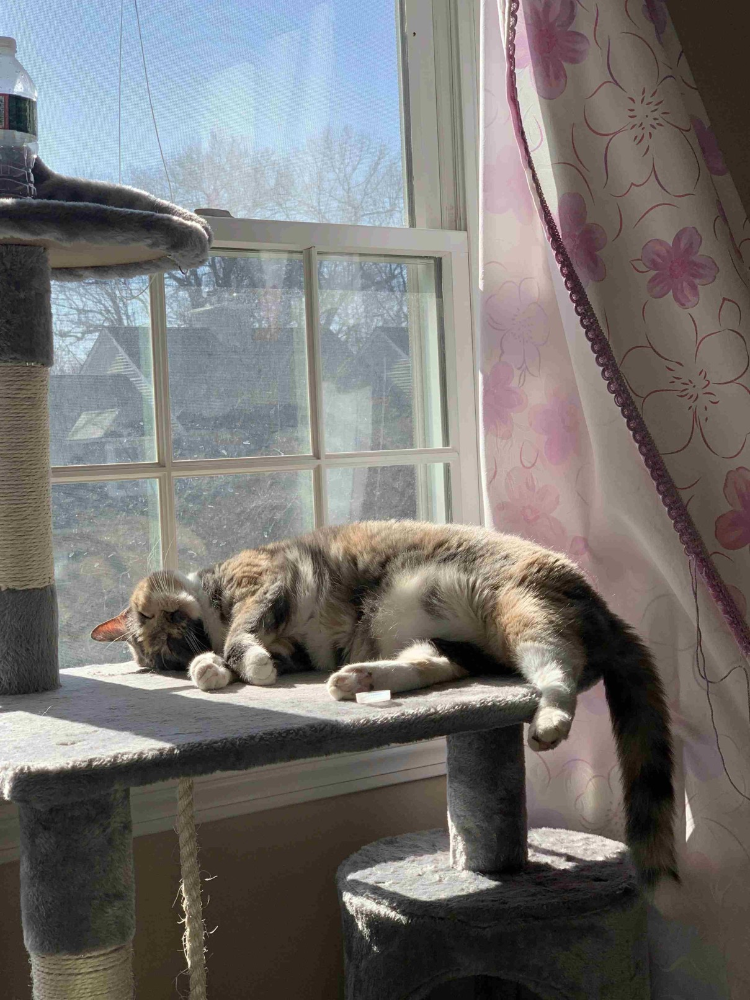
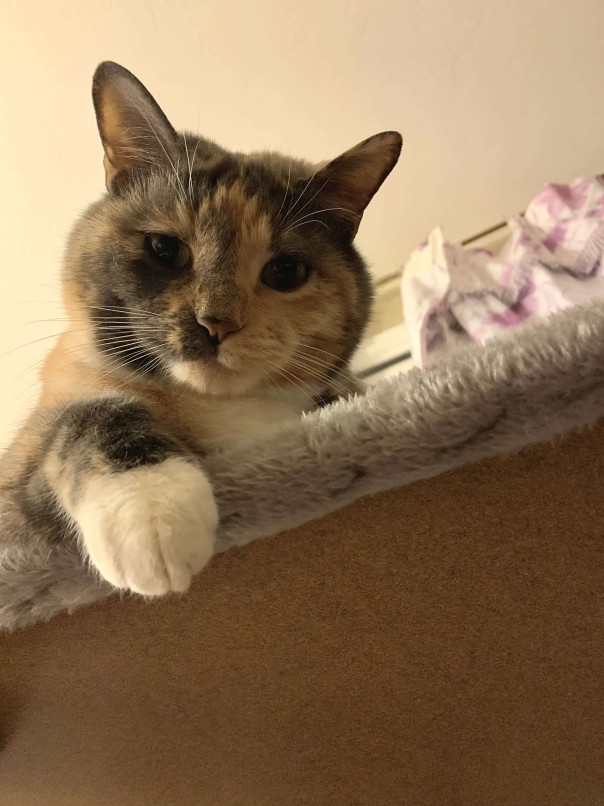
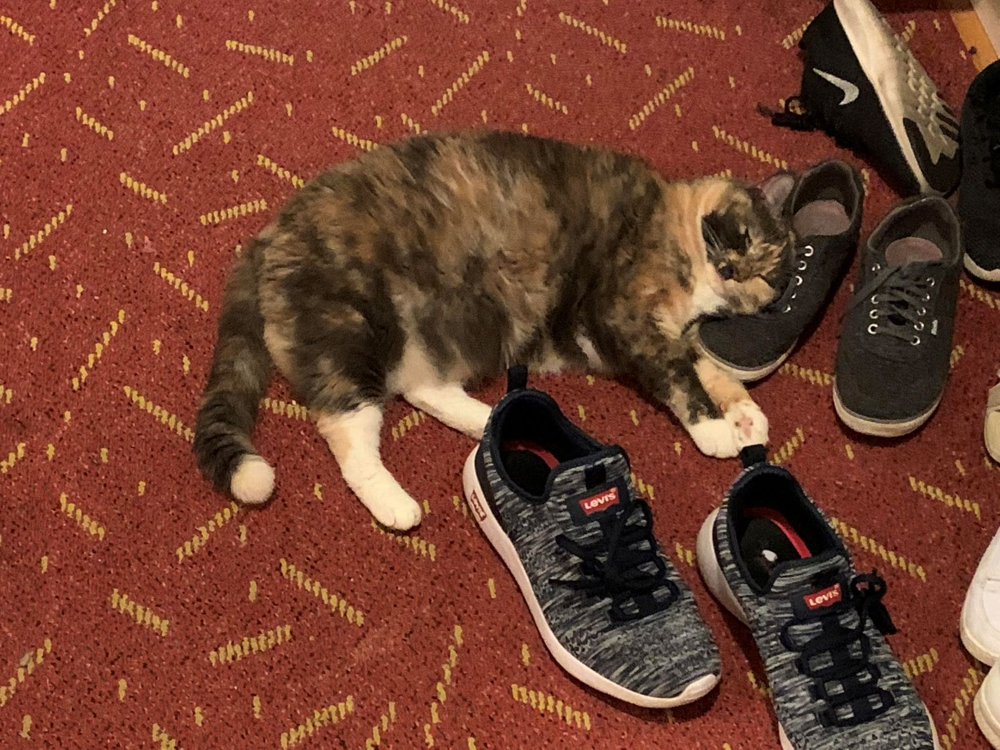

This website dates all the way back to my junior year of high school (when this picture of me doing an aerial was taken). It has grown into my part- personal project and part- project portfolio. It is coded completely from scratch and without the use of AI. A fun fact is that the overall style/CSS is almost exactly the same as it was when I first made the website, since I still love it!

I'm currently a junior at Cornell University and am studying electrical and computer engineering! I'm very active on campus: you can typically find me around teaching and learning dances, working on various engineering projects, co-leading courses, and attending events with animals and/or free food. I'm an enthusiastic Cornell squirrel documenter-- they eat everything from potato chips to whole bread rolls (someone needs to study the impact of their diets). I'm from Massachusetts and graduated from Mass Academy. Interestingly enough, I've never lived in Worcester, though I always get myself involved in some activity or community there. Worcester is home to my favorite bagel shop, Bagel Time! They are a must-try if you ever visit the area.
Nellie is my cat. She is 9 years old and loves sitting on our sidewalk to greet new people. She's very sweet and loves getting pets, though she's not a lap cat. Lately, she's been especially enthusiastic about going outside to sunbathe.


